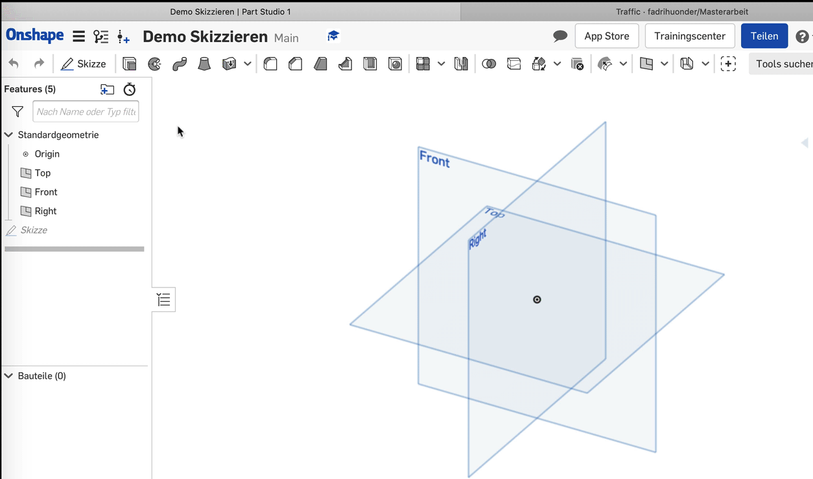
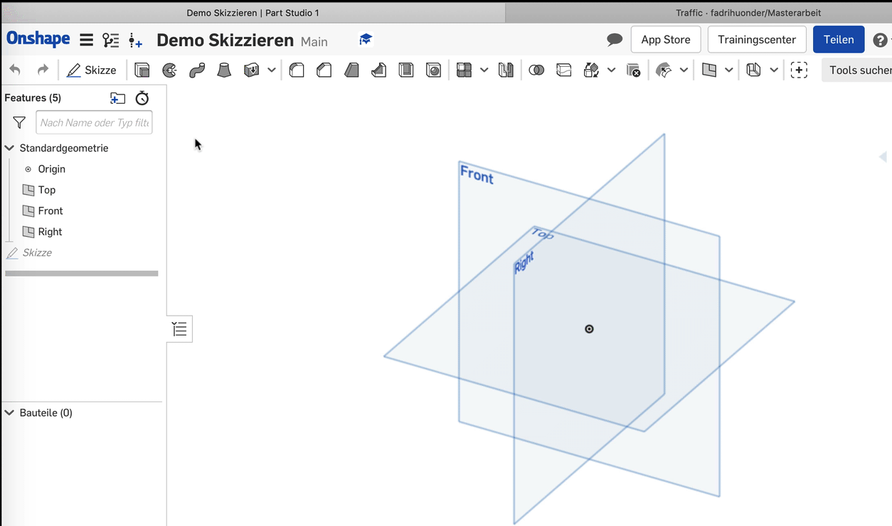
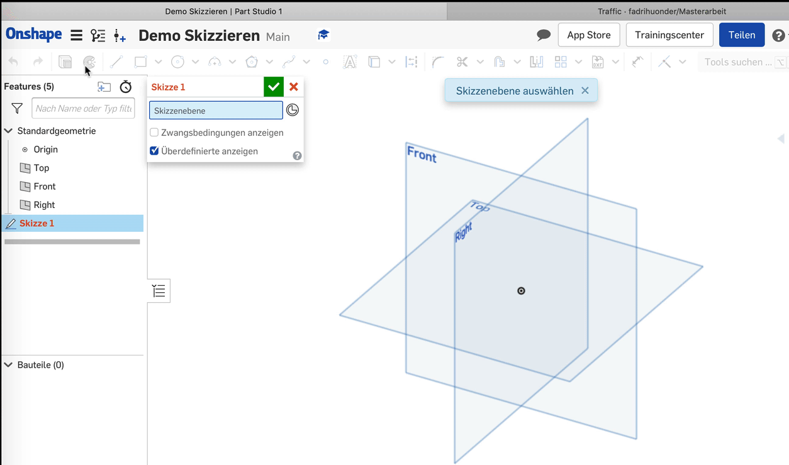
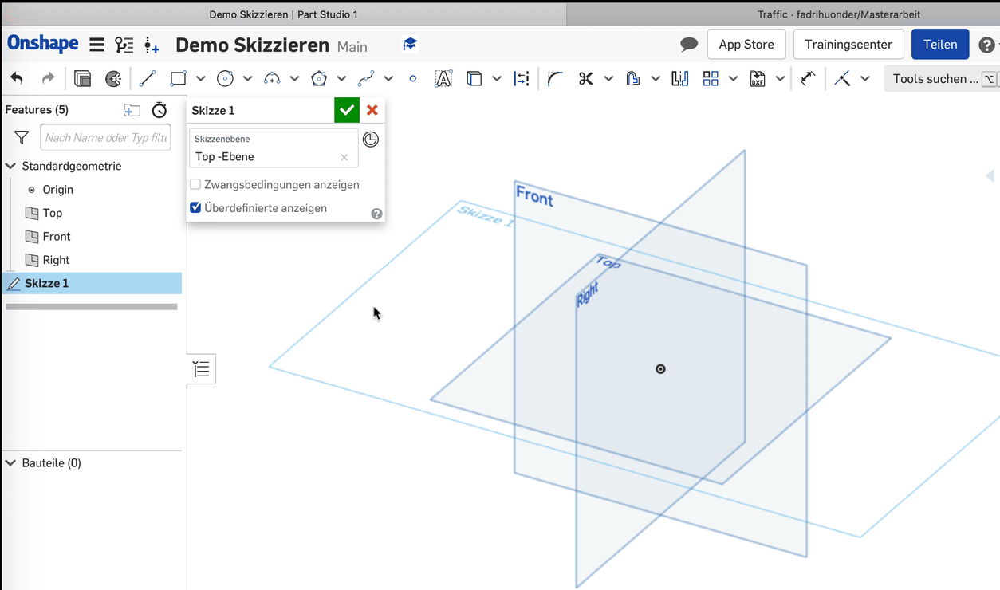
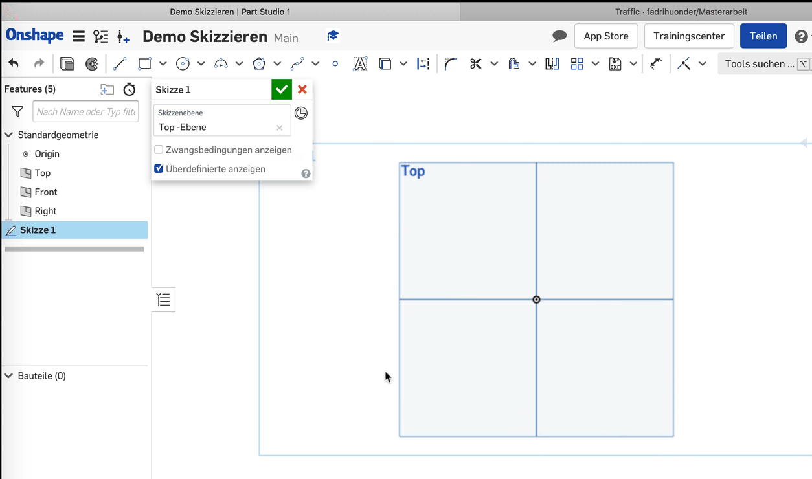

1. Schritt
Klicke in der Werkzeugleiste links auf die Schaltfläche "Skizze".
 

2. Schritt
Im neu geöffneten Dialogfenster ist der Bereich "Skizzenebene" blau hinterlegt. Das bedeutet dass du jetzt die Skizzenebene festlegen kannst, indem du in der Feature-Liste auf die gewünschte Ebene klickst.
(Top, Front, Side oder eine eigene verschobene Ebene)

3. Schritt
Mit einem Rechtsklick in den Arbeitsbereich und einem Klick auf "Ansicht senkrecht zur Skizzenebene" kannst du die Ansicht anpassen.

Wichtig!
Wenn du die Skizze nach dem Zeichnen verlassen möchtest, musst du unbedingt auf das grüne Häkchen drücken. Die Skizze wird sonst gelöscht.
